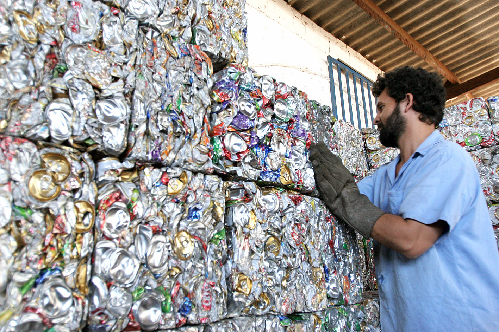

A reciclagem é essencial para reduzir a poluição, economizar energia e preservar os recursos naturais. Diminui resíduos nos aterros, aumenta vida útil e evita a extração de novos materiais. Gera empregos e contribui para a construção de uma economia circular.
Use o mapa para achar os centros de reciclagem mais próximos de você: